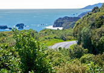
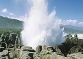

West Coast
The South Island's West Coast of New Zealand is a narrow coastal strip which runs parallel to the majestic Southern Alps. The Coast's history is carved out of greenstone (jade), gold, coal and timber. This was pioneer country 140 years ago, it's still pioneer country today.
Stretching 600 kilometres along the western coast of the New Zealand's South Island, the West Coast (often referred to as Westland) is a rugged, primeval region of contrasting features - towering snow-capped mountains, endless rainforests, lowland river valleys, grinding glaciers, dramatic coastlines, surging rivers and brooding lakes.
Greymouth (the West Coast’s Tourism centre) is a busy town servicing the local industries which include mining, forestry, fishing and ecotourism. Greymouth is also known for its Pounamu ("Greenstone", a form of Jade) carving industry. Hokitika is well regarded for its greenstone carving industry. More recently, it has gained a reputation for its annual wild food festival. The area is also popular for outdoor activities such as canoeing, rafting, mountain biking and hiking. Punakaiki is home to the famous Pancake rocks, unique pancake-shaped rocks a short walk from the main road.